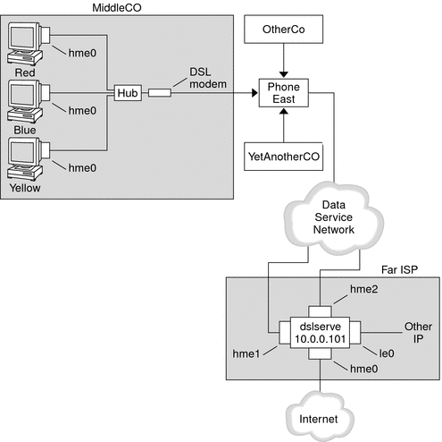

|
|||||||||||||||||||||
|
Part I Network Services Topics Part II Accessing Network File Systems Topics 4. Managing Network File Systems (Overview) 5. Network File System Administration (Tasks) 6. Accessing Network File Systems (Reference) 8. Planning and Enabling SLP (Tasks) 10. Incorporating Legacy Services Part V Serial Networking Topics 15. Solaris PPP 4.0 (Overview) 16. Planning for the PPP Link (Tasks) Overall PPP Planning (Task Map) Planning for Authentication on a Link 17. Setting Up a Dial-up PPP Link (Tasks) 18. Setting Up a Leased-Line PPP Link (Tasks) 19. Setting Up PPP Authentication (Tasks) 20. Setting Up a PPPoE Tunnel (Tasks) 21. Fixing Common PPP Problems (Tasks) 22. Solaris PPP 4.0 (Reference) 23. Migrating From Asynchronous Solaris PPP to Solaris PPP 4.0 (Tasks) 25. Administering UUCP (Tasks) Part VI Working With Remote Systems Topics 27. Working With Remote Systems (Overview) 28. Administering the FTP Server (Tasks) 29. Accessing Remote Systems (Tasks) Part VII Monitoring Network Services Topics |
Planning for DSL Support Over a PPPoE TunnelSome DSL providers require you to set up PPPoE tunneling for your site in order to run PPP over the providers' DSL lines and high-speed digital networks. For an overview of PPPoE, see Support for DSL Users Through PPPoE. A PPPoE tunnel involves three participants: a consumer, a telephone company, and an ISP. You either configure PPPoE for consumers, such as PPPoE clients at your company or consumers in their homes, or you configure PPPoE on a server at an ISP. This section contains planning information for running PPPoE on both clients and access servers. The following topics are covered:
For tasks about setting up a PPPoE tunnel, see Chapter 20, Setting Up a PPPoE Tunnel (Tasks). Before You Set Up a PPPoE TunnelYour preconfiguration activities depend on whether you configure the client side or server side of the tunnel. In either instance, you or your organization must contract with a telephone company. The telephone company provides the DSL lines for clients, and some form of bridging and possibly an ATM pipe for access servers. In most contracts, the telephone company assembles its equipment at your site. Before Configuring a PPPoE ClientPPPoE client implementations usually consist of the following equipment:
Many different DSL configurations are possible, which depend on the user or corporation's needs and the services that are offered by the provider. Table 16-6 Planning for PPPoE Clients
Before Configuring a PPPoE ServerPlanning for a PPPoE access server involves working with the telephone company that provides your connection to its data service network. The telephone company installs its lines, often ATM pipes, at your site, and provides some sort of bridging into your access server. You need to configure the Ethernet interfaces that access the services that your company provides. For example, you need to configure interfaces for Internet access, as well as the Ethernet interfaces from the telephone company's bridge. Table 16-7 Planning for a PPPoE Access Server
Example of a Configuration for a PPPoE TunnelThis section contains an example of a PPPoE tunnel, which is used as an illustration for the tasks in Chapter 20, Setting Up a PPPoE Tunnel (Tasks). Though the illustration shows all participants in the tunnel, you only administer one end, either the client side or server side. Figure 16-5 Example of a PPPoE TunnelIn the sample, MiddleCo wants to provide its employees with high-speed Internet access. MiddleCo buys a DSL package from Phone East, which, in turn, contracts with service provider Far ISP. Far ISP offers Internet and other IP services to customers who buy DSL from Phone East. Example of a PPPoE Client ConfigurationMiddleCo buys a package from Phone East that provides one DSL line for the site. The package includes a dedicated, authenticated connection to the ISP for MiddleCo's PPPoE clients. The system administrator cables the prospective PPPoE clients to a hub. Technicians from Phone East cable the hub to their DSL equipment. Example of a PPPoE Server ConfigurationTo implement the business arrangement FarISP has with Phone East, the system administrator at FarISP configures the access server dslserve. This server has the following four interfaces:
Where to Get More Information About PPPoEChoose from the following:
|
||||||||||||||||||||
|